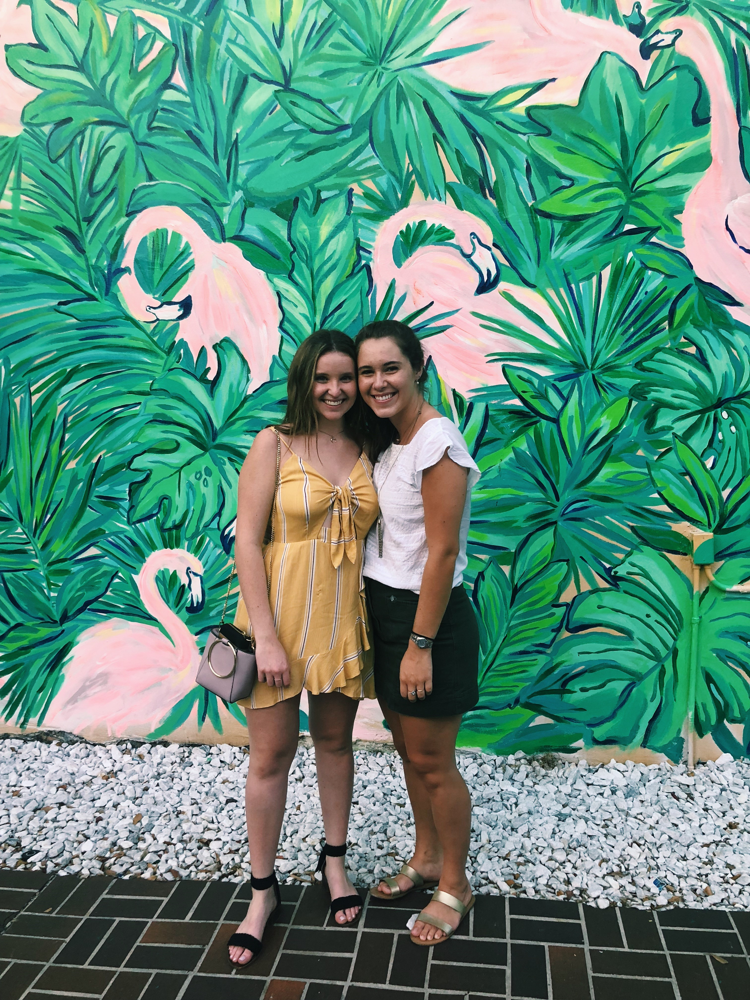

About the Author
Caroline Tschida
Caroline Tschida is a sophomore at Florida State University, majoring in Information, Communications, & Technology. This site was created as an example for an assignment for my Web Development class. The references used for this site are listed below.

References
Title: 100 Things To Do During Screen Free Week
- Author: Katy Wolk-Stanley
- Date: 2017
Title: Setting Limits on Screen Time: What Does Research Say?
- Author: Saga Briggs
- Publication: InformED
- Date: 2017
Title: College Students In Study Spend 8 to 10 Hours Daily On Cell Phone
- Author: Janice Wood
- Publication: PsychCentral
- Date: 2018
Title: Modern Technology and Sleep
- Date: 2014
Title: Gray Matters: Too Much Screen Time Damages the Brain
- Author: Victoria L. Dunckley
- Date: 2014
This is a custom color palette that utilizes different shades of blue and grey.